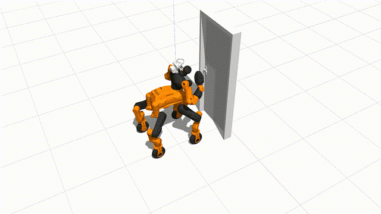
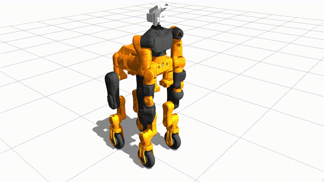
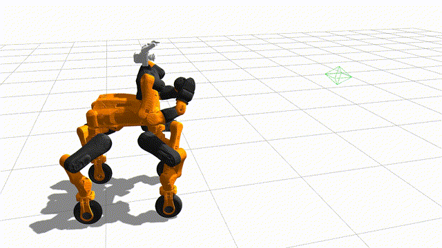
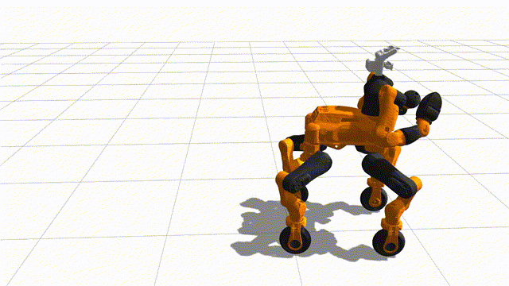
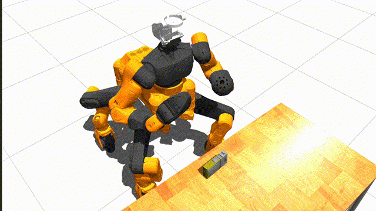

Enabling humanoid robots to autonomously perform hybrid locomotion and manipulation in diverse environments can be beneficial for long-horizon tasks such as factory material handling, household chores, and work assistance. This requires extensive exploitation of intrinsic motion capabilities, extraction of affordances from rich environmental information, and planning of physical interaction behaviors. Despite recent progress has demonstrated impressive humanoid whole-body control abilities, they struggle to achieve versatility and adaptability for new tasks. In this work, we propose HYPERmotion, a framework that learns, selects and plans behaviors based on tasks in different scenarios. We combine reinforcement learning with whole-body model predictive control to generate motion for 37 actuated joints and create a motion library to store the learned skills. We further apply the online planning and reasoning features of the large language models (LLMs) to complex loco-manipulation tasks, constructing a hierarchical task graph that comprises a series of primitive behaviors to bridge lower-level execution with higher-level planning. By leveraging the interaction of distilled spatial geometry and 2D observation with a visual language model (VLM) to ground knowledge into a robotic morphology selector to choose appropriate actions in single- or dual-arm, legged or wheeled locomotion. Experiments in both simulated and real-world settings show that learned whole-body skills can efficiently adapt to new tasks, demonstrating high autonomy from free-text instructions in unstructured scenes.
"Move to the door and open it."
"Open the drawer and pick up the mustard."
"Pick up the cracker and place in the box."
"Pick up the food box and give it to me."
Overview of HYPERmotion: We decompose the framework into four sectors: Motion generation is assigned for learning and training whole-body motion skills for new tasks and storing them in the motion library. User input includes received task instructions and initialization prompt sets. Task planning generates a task graph that guides the robot's behavior through reasoning and planning features of LLM and passes action commands to the real robot. Morphology Selector Selector is used for action determination in specific sub-tasks, selecting the appropriate morphology for locomotion and manipulation based on grounded spatial knowledge and robot intrinsic features.
Prompts for the User Input:
User Interface |
Motion Library |
Basic Prompts |
Function Options
@inproceedings{wang2024hypermotion,
title={HYPERmotion: Learning Hybrid Behavior Planning for Autonomous Loco-manipulation},
author={Wang, Jin and Dai, Rui and Wang, Weijie and Rossini, Luca and Ruscelli, Francesco and Tsagarakis, Nikos},
booktitle={8th Annual Conference on Robot Learning}
}